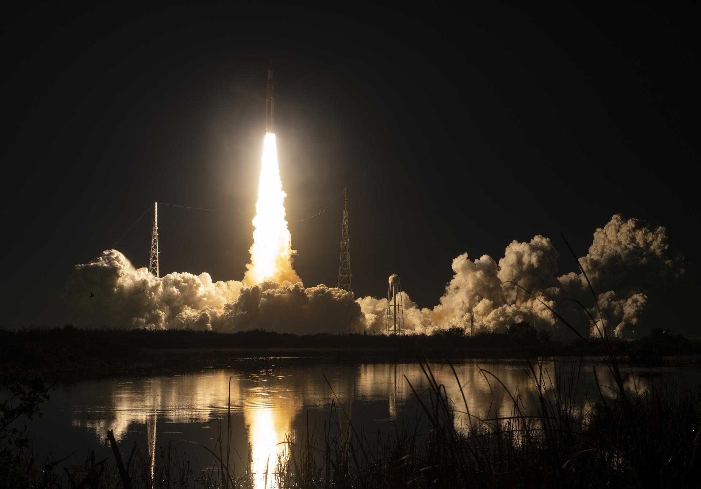

ARTEMIS I
NOVEMBER 16 — DECEMBER 11, 2022

THE FIRST STEP TOWARD RETURNING TO THE MOON
Artemis I was an uncrewed flight test of next-generation systems, laying the foundation for human deep space exploration.
The primary objective of the mission was to test the safety and reliability of the Orion spacecraft in the harsh environment of deep space, evaluate the performance of the Space Launch System (SLS) rocket, and ensure heat shield integrity during atmospheric re-entry at speeds approaching 40,000 km/h.
Launch
Liftoff from Kennedy Space Center. The powerful SLS rocket launched Orion into orbit.
Lunar Flyby
Approach to the Moon within 130 km of the surface to perform a gravitational flyby maneuver.
Distant Retrograde Orbit
Insertion into Distant Retrograde Orbit. Orion traveled farther than any human-rated spacecraft ever before.
Return Journey
Second lunar flyby and ESA Service Module engine burn to initiate trajectory back to Earth.
Pacific Ocean Splashdown
Successful splashdown in the Pacific Ocean off the coast of Baja California. Mission complete.

THE FUTURE OF THE PROGRAM
Artemis I paved the way for humanity's next giant leap. The next mission, Artemis II, will carry a crew of four astronauts on a flyby around the Moon. It will be followed by Artemis III, marking a new era of human lunar landings and the establishment of the Gateway space station.